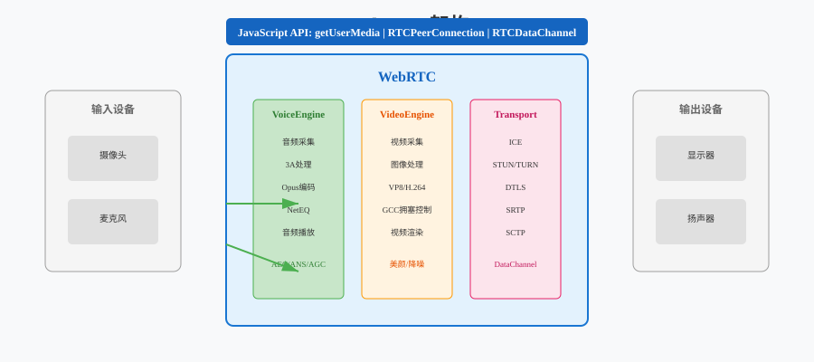
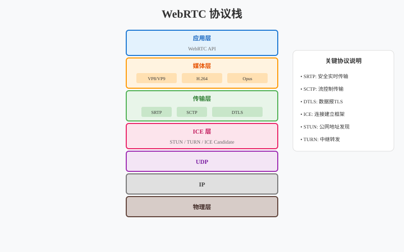
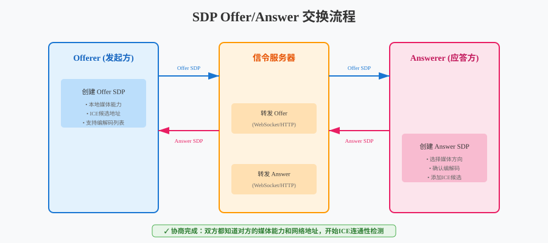
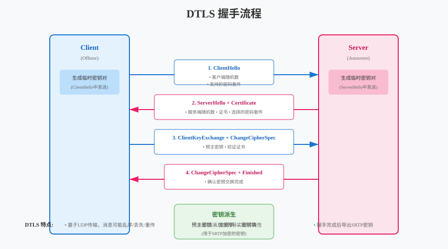
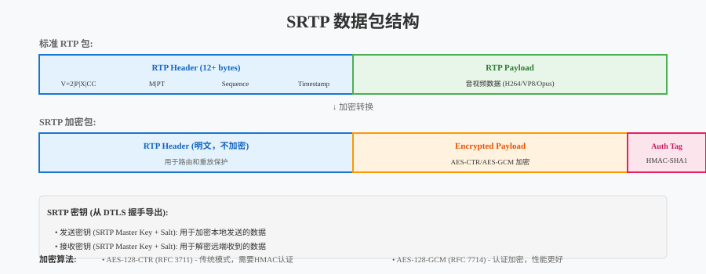

音视频开发实战
第20章：WebRTC 标准详解
本章目标：深入理解 WebRTC 协议栈，掌握实时通信的工业标准。
上一章（第19章）我们深入学习了 NAT 穿透 和 P2P 连接建立，掌握了 STUN/TURN/ICE 协议栈。虽然使用这些协议可以实现 P2P 连接，但工业级的实时通信还需要解决更多问题： - 加密传输：如何防止窃听？ - 媒体协商：如何确定双方支持的编解码格式？ - 网络适应：如何应对丢包和带宽变化？ - 数据通道：除了音视频，如何传输其他数据？
WebRTC（Web Real-Time Communication） 是一个开源项目，也是一个 W3C 标准，提供了完整的实时通信解决方案。
本章学习路线： 1. 理解 WebRTC 的架构和核心组件 2. 深入协议栈：从 ICE 到 SRTP 的四层架构 3. 掌握 SDP 会话描述和 Offer/Answer 协商 4. 理解 DTLS 加密握手和 SRTP 安全传输 5. 学习 DataChannel 数据通道
学习本章后，你将能够： - 理解 WebRTC 的协议栈架构 - 解析和生成 SDP 描述 - 理解 DTLS/SRTP 的加密流程 - 使用 DataChannel 传输任意数据
目录
1. WebRTC 是什么？
1.1 WebRTC 的历史与背景
WebRTC 由 Google 于 2011 年开源，目的是让浏览器无需插件就能进行实时音视频通信。
核心诉求： - 标准化：统一的 API，跨浏览器兼容 - 安全性：端到端加密 - 低延迟：适合实时通话 - P2P 优先：直接通信，降低服务器成本
WebRTC 不是单一协议，而是一套技术栈，包括： - 音视频采集和处理 - 编解码（VP8/VP9/H.264/Opus） - 网络传输（ICE/DTLS/SRTP） - 数据通道（SCTP）
1.2 WebRTC 三大引擎

VoiceEngine（音频引擎）： - 音频采集和播放 - 3A 处理（AEC/ANS/AGC） - Opus 编解码 - JitterBuffer 和 NetEQ
VideoEngine（视频引擎）： - 视频采集和渲染 - VP8/VP9/H.264 编解码 - 拥塞控制（GCC） - 图像处理（降噪、美颜等）
Transport（传输层）： - ICE 连接管理 - DTLS 加密 - SRTP 安全传输 - SCTP 数据通道
1.3 WebRTC vs 自研方案
| 特性 | 自研 P2P | WebRTC |
|---|---|---|
| 开发成本 | 高（需处理所有细节） | 低（标准库封装） |
| 跨平台 | 需自行适配 | 浏览器原生支持 |
| 安全性 | 需自行实现加密 | 内置 DTLS/SRTP |
| 编解码 | 需自行集成 | 内置多种编解码器 |
| 网络适应 | 需自行实现 | 内置 GCC 拥塞控制 |
| 生态支持 | 有限 | 丰富的开源项目 |
结论：除非有特殊需求，否则生产环境优先选择 WebRTC。
2. WebRTC 协议栈
2.1 四层协议架构

WebRTC 的传输层采用四层协议栈：
┌─────────────────────────────────────────┐
│ 应用层 (Application) │
│ - 音视频数据 (RTP) │
│ - 数据通道 (SCTP) │
├─────────────────────────────────────────┤
│ SRTP (Secure RTP) │
│ - RTP 加密传输 │
│ - 认证和完整性保护 │
├─────────────────────────────────────────┤
│ DTLS (Datagram TLS) │
│ - 密钥交换 │
│ - 证书验证 │
├─────────────────────────────────────────┤
│ ICE/STUN/TURN │
│ - 连接建立 │
│ - NAT 穿透 │
│ - 中继 fallback │
├─────────────────────────────────────────┤
│ UDP │
│ - 底层传输 │
└─────────────────────────────────────────┘2.2 每层的作用
第 1 层：ICE/STUN/TURN - 解决连接建立问题 - NAT 穿透 - 已在第 17 章详细讲解
第 2 层：DTLS - 解决密钥交换问题 - 协商 SRTP 加密密钥 - 证书验证，防止中间人攻击
第 3 层：SRTP - 解决媒体加密问题 - RTP 包加密 - 认证标签防止篡改
第 4 层：应用层 - RTP：音视频数据传输 - SCTP：数据通道传输
2.3 为什么是这种分层？
分层的好处： 1. 职责分离：每层只解决一个问题 2. 可替换：可以替换某一层而不影响其他层 3. 标准化：每层都有标准 RFC 文档
与其他协议的对比：
| 协议 | 分层 | 特点 |
|---|---|---|
| HTTPS | TLS → HTTP | 可靠流传输 |
| WebRTC | ICE → DTLS → SRTP → RTP | 不可靠数据报 |
| RTMP | TCP → RTMP | 简单但延迟高 |
3. SDP 会话描述
3.1 什么是 SDP？
SDP（Session Description Protocol，会话描述协议） 是一种文本格式，用于描述多媒体会话的参数。
为什么需要 SDP？ 在建立连接之前，双方需要交换以下信息： - 支持的编解码格式（H.264? VP8? Opus?） - 传输地址（IP:Port） - ICE 候选 - DTLS 指纹 - SSRC（同步源标识）
3.2 SDP 格式
SDP 是纯文本格式，由多行组成，每行格式为：
<type>=<value>常见字段：
| 字段 | 含义 | 示例 |
|---|---|---|
| v= | 协议版本 | v=0 |
| o= | 会话所有者 | o=- 123456 2 IN IP4 127.0.0.1 |
| s= | 会话名称 | s=- |
| t= | 时间 | t=0 0（永久） |
| m= | 媒体描述 | m=audio 9 UDP/TLS/RTP/SAVPF 111 |
| c= | 连接信息 | c=IN IP4 0.0.0.0 |
| a= | 属性 | a=rtpmap:111 opus/48000/2 |
3.3 WebRTC SDP 示例
v=0
o=- 1234567890 2 IN IP4 127.0.0.1
s=-
t=0 0
// DTLS 指纹（用于证书验证）
a=fingerprint:sha-256 4A:79:94:...:B6:71
a=setup:actpass
// ICE 候选（简化示例）
a=candidate:1 1 UDP 2130706431 192.168.1.2 5000 typ host
a=candidate:2 1 UDP 1694498815 1.2.3.4 60001 typ srflx
// 音频媒体
m=audio 9 UDP/TLS/RTP/SAVPF 111 103 104
a=mid:audio
a=sendrecv
a=rtpmap:111 opus/48000/2
a=rtpmap:103 ISAC/16000
a=ssrc:12345678 cname:user@host
// 视频媒体
m=video 9 UDP/TLS/RTP/SAVPF 96 97
a=mid:video
a=sendrecv
a=rtpmap:96 VP8/90000
a=rtpmap:97 H264/90000
a=ssrc:87654321 cname:user@host3.4 Offer/Answer 模型

协商流程：
主播端 (Offerer) 观众端 (Answerer)
│ │
│ 1. CreateOffer() │
│ 生成 SDP Offer │
│ │
│──SDP Offer──────────────────→│
│ 包含: 支持的所有编解码 │
│ 所有 ICE 候选 │
│ DTLS 指纹 │
│ │
│ │ 2. CreateAnswer()
│ │ 选择合适的配置
│ │ 生成 SDP Answer
│ │
│←─SDP Answer──────────────────│
│ 包含: 选定的编解码 │
│ 对方的 ICE 候选 │
│ 对方的 DTLS 指纹 │
│ │
│ 3. SetLocal/RemoteDescription│
│ 双方配置生效 │关键点： - Offer：发起方提供的 “我能支持什么” - Answer：接收方选择的 “我们用什么” - 协商是双向的：双方都要设置本地和远端的 SDP
3.5 SDP 的演进：Trickle ICE
问题：ICE 候选收集可能需要几秒时间，阻塞 SDP 交换。
Trickle ICE 解决方案： - 先交换不含候选的 SDP - 候选收集完成后，单独发送（ICE Candidate Trickling）
主播端 观众端
│ │
│ SDP Offer (无候选) │
│─────────────────────────────→│
│ │
│ Candidate: host 192.168.1.2 │
│─────────────────────────────→│
│ Candidate: srflx 1.2.3.4 │
│─────────────────────────────→│
│ Candidate: relay 5.6.7.8 │
│─────────────────────────────→│好处：连接建立更快，用户体验更好。
4. DTLS 加密握手
4.1 为什么需要 DTLS？
SRTP 需要加密密钥，但密钥如何安全地交换？
DTLS（Datagram Transport Layer Security） 是 TLS 的 UDP 版本，用于： 1. 密钥交换：协商 SRTP 加密密钥 2. 证书验证：确认对方身份，防止中间人攻击 3. 加密传输：握手完成前，所有数据都加密
4.2 DTLS 握手流程

简化流程：
主播端 观众端
│ │
│ 1. ClientHello │
│ - 支持的加密套件 │
│ - 随机数 │
│─────────────────────────────────→│
│ │
│ │ 2. ServerHello
│ │ - 选择的加密套件
│ │ - 随机数
│ │ 3. Certificate
│ │ - 服务器证书
│ │ 4. ServerHelloDone
│←─────────────────────────────────│
│ │
│ 5. ClientKeyExchange │
│ - 预主密钥 (用服务器公钥加密) │
│ 6. ChangeCipherSpec │
│ 7. Finished │
│─────────────────────────────────→│
│ │
│ │ 8. ChangeCipherSpec
│ │ 9. Finished
│←─────────────────────────────────│
│ │
│ [加密通道建立] │ [加密通道建立]
│ 导出 SRTP 密钥 │ 导出 SRTP 密钥4.3 DTLS 与 TLS 的区别
| 特性 | TLS (HTTPS) | DTLS (WebRTC) |
|---|---|---|
| 传输层 | TCP | UDP |
| 可靠性 | 内置重传 | 应用层处理重传 |
| 队头阻塞 | 有 | 无 |
| 适用场景 | 网页、API | 实时音视频 |
为什么 WebRTC 用 DTLS 而不是 TLS？ - UDP 无连接，延迟更低 - 无队头阻塞，丢包不影响其他数据 - 适合实时性要求高的场景
4.4 证书与指纹验证
如何防止中间人攻击？
WebRTC 使用 自签名证书 + 指纹验证：
1. 每个端生成自签名证书
2. 计算证书指纹 (SHA-256)
3. 将指纹放入 SDP: a=fingerprint:sha-256 ...
4. 通过信令服务器交换 SDP
5. DTLS 握手时验证对方证书指纹好处： - 不需要 CA 证书 - 信令服务器的安全性保证 WebRTC 的安全性 - 即使媒体路径被劫持，也无法解密
5. SRTP 安全传输
5.1 什么是 SRTP？
SRTP（Secure Real-time Transport Protocol） 是 RTP 的安全版本，提供： - 加密：防止窃听 - 认证：防止篡改 - 重放保护：防止重放攻击
5.2 SRTP 包结构

RTP Header (12 bytes+)
┌─────────────────────────────────────────────────────────────┐
│ V |P|X| CC |M| PT │ Sequence Number │
├─────────────────────────────────────────────────────────────┤
│ Timestamp │
├─────────────────────────────────────────────────────────────┤
│ SSRC │
├─────────────────────────────────────────────────────────────┤
│ CSRC (可选) │
└─────────────────────────────────────────────────────────────┘
Encrypted Payload
┌─────────────────────────────────────────────────────────────┐
│ 加密后的音视频数据 │
└─────────────────────────────────────────────────────────────┘
Authentication Tag (10 bytes)
┌─────────────────────────────────────────────────────────────┐
│ 认证标签 (HMAC) │
└─────────────────────────────────────────────────────────────┘加密范围： - 加密：Payload（音视频数据） - 不加密：RTP Header（需要路由信息） - 附加：认证标签（验证数据完整性）
5.3 密钥派生
SRTP 密钥从 DTLS 握手导出：
DTLS 握手完成
│
▼
导出密钥材料 (Exporter)
│
├──> SRTP 加密密钥
├──> SRTP 认证密钥
└──> SRTP Salt不同流的独立密钥： - 音频发送密钥 - 音频接收密钥 - 视频发送密钥 - 视频接收密钥
5.4 ROC（Roll-Over Counter）
问题：RTP 序列号只有 16 位（0-65535），会回绕。
解决方案：ROC 记录序列号回绕次数。
实际包序号 = ROC × 65536 + Sequence Number
示例：
- 第 1 个包: ROC=0, Seq=0 → 实际序号 0
- 第 65536 个包: ROC=0, Seq=65535 → 实际序号 65535
- 第 65537 个包: ROC=1, Seq=0 → 实际序号 65536ROC 用于 SRTP 的加密 IV（初始化向量）计算，确保即使序列号回绕，加密依然安全。
6. DataChannel
6.1 什么是 DataChannel？
DataChannel 允许在 WebRTC 连接上传输任意数据，不仅仅是音视频。
应用场景： - 文字消息 - 文件传输 - 游戏状态同步 - 远程控制指令
6.2 DataChannel 协议栈
DataChannel 基于 SCTP（Stream Control Transmission Protocol） over DTLS：
应用层数据
│
▼
SCTP (数据分片、流控制、拥塞控制)
│
▼
DTLS (加密)
│
▼
UDP为什么选择 SCTP 而不是直接使用 DTLS？ - 多流：一个连接可以有多个独立的数据通道 - 可靠性可选：可靠传输或不可靠传输 - 有序性可选：有序或无序传输 - 拥塞控制：内置流量控制
6.3 DataChannel API
// 创建 DataChannel
auto data_channel = peer_connection->CreateDataChannel(
"chat", // 标签
{
.ordered = true, // 有序传输
.maxRetransmits = nullptr, // 可靠传输
.protocol = "" // 子协议
}
);
// 发送消息
data_channel->Send(DataBuffer("Hello, WebRTC!"));
// 接收回调
data_channel->RegisterObserver({
.OnMessage = [](const DataBuffer& buffer) {
std::string msg(buffer.data.data(), buffer.data.size());
std::cout << "Received: " << msg << std::endl;
}
});6.4 传输模式对比
| 模式 | 可靠性 | 有序性 | 适用场景 |
|---|---|---|---|
| 可靠有序 | ✓ | ✓ | 文字消息、文件传输 |
| 可靠无序 | ✓ | ✗ | 多文件并行传输 |
| 不可靠有序 | ✗ | ✓ | 实时位置更新 |
| 不可靠无序 | ✗ | ✗ | 游戏状态同步 |
6.5 DataChannel vs WebSocket
| 特性 | DataChannel | WebSocket |
|---|---|---|
| 传输路径 | P2P 直连 | 通过服务器 |
| 延迟 | < 50ms | 50-200ms |
| 服务器成本 | 低 | 高 |
| 建立复杂度 | 高（需 ICE 协商） | 低 |
| 适用场景 | 实时游戏、文件传输 | 聊天、通知 |
7. 本章总结
7.1 WebRTC 协议栈总览
┌─────────────────────────────────────────────────────────────┐
│ WebRTC 技术栈 │
├─────────────────────────────────────────────────────────────┤
│ 应用层 │
│ ├─ RTP (音视频) │
│ └─ SCTP (DataChannel) │
├─────────────────────────────────────────────────────────────┤
│ SRTP ── 媒体加密 (AES) │
├─────────────────────────────────────────────────────────────┤
│ DTLS ── 密钥交换 + 证书验证 │
├─────────────────────────────────────────────────────────────┤
│ ICE/STUN/TURN ── 连接建立 + NAT 穿透 │
├─────────────────────────────────────────────────────────────┤
│ UDP ── 底层传输 │
└─────────────────────────────────────────────────────────────┘7.2 关键概念回顾
| 概念 | 作用 | 类比 |
|---|---|---|
| SDP | 描述会话参数 | 菜单（列出所有选项） |
| Offer/Answer | 协商媒体格式 | 点菜（从菜单中选择） |
| DTLS | 加密握手 | SSL 证书验证 |
| SRTP | 媒体加密 | HTTPS 加密 |
| DataChannel | 传输任意数据 | WebSocket 的 P2P 版本 |
7.3 与下一章的衔接
本章我们深入理解了 WebRTC 的协议栈和核心概念，掌握了 SDP、DTLS、SRTP、DataChannel 等关键协议的工作原理。理论知识是基础，但真正的能力来自于实践。
下一章（第21章）WebRTC Native 开发 将带你进入实战： - 获取和编译 WebRTC 源码（GN + Ninja 构建系统） - 使用 Native PeerConnection API - 管理音视频轨道和设备 - 实现完整的信令交互流程 - 构建可运行的 1v1 连麦客户端
通过 Native 开发，你将真正掌握 WebRTC 的实战应用，为后续学习 SFU 服务器和多人房间架构打下坚实基础。
课后思考
为什么 WebRTC 使用自签名证书而不是传统 CA 证书？ 这种设计有什么优缺点？
SRTP 只加密 Payload 不加密 Header，会有什么安全隐患？ 攻击者能从 Header 中获取什么信息？
对比 WebRTC DataChannel 和 QUIC：两者都基于 UDP，都提供可靠传输，设计上有何异同？
如果你的应用需要同时传输音视频和文件，你会如何设计？使用一个 PeerConnection 还是多个？DataChannel 和 RTP 如何配合？